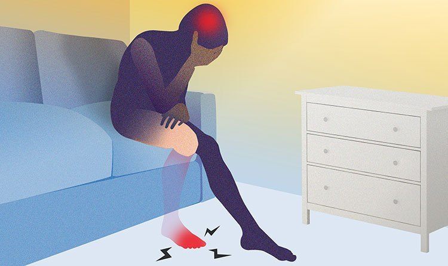
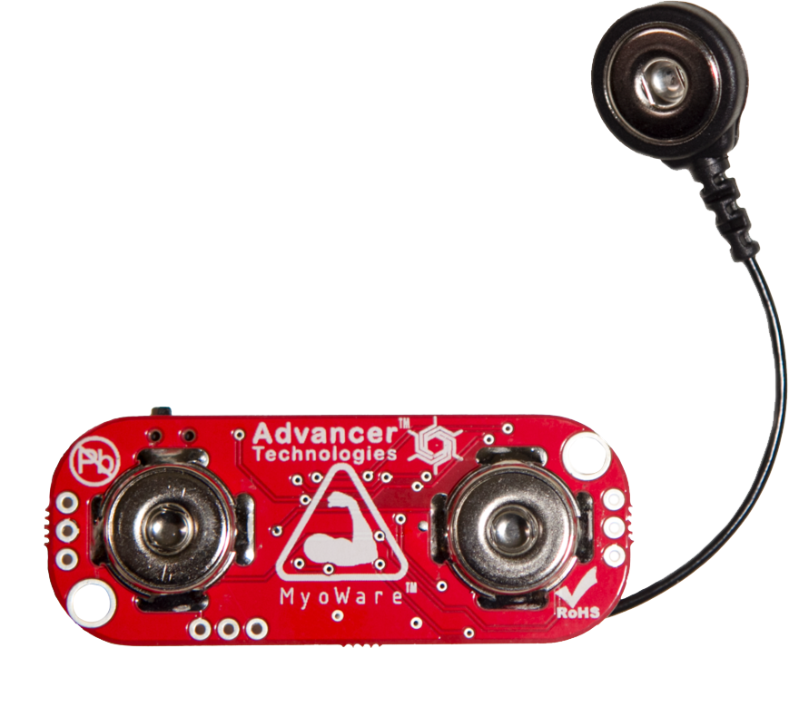
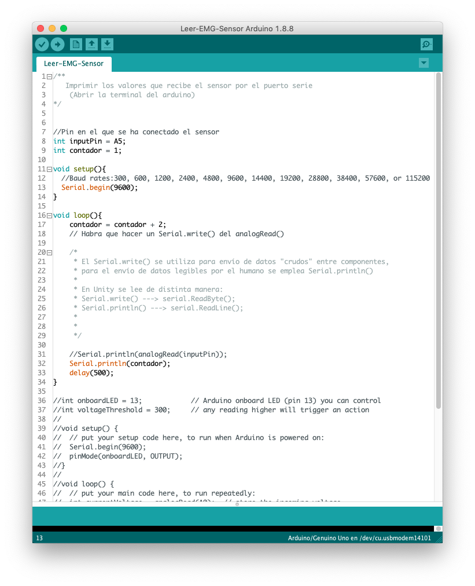
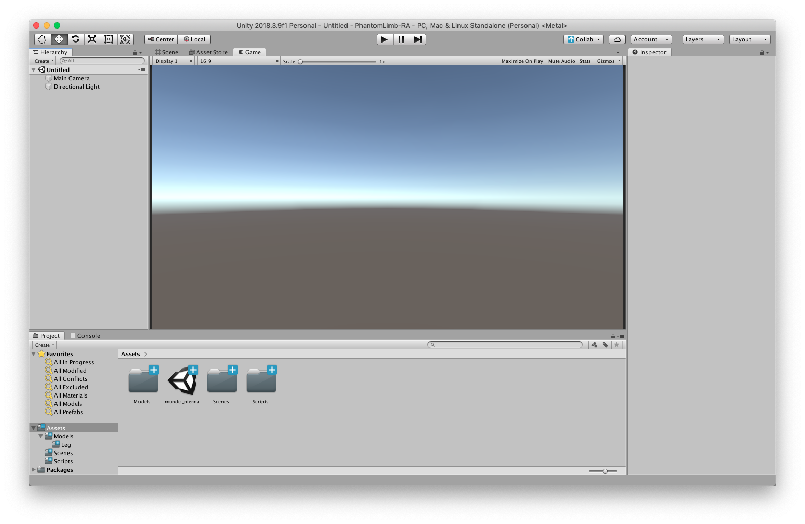
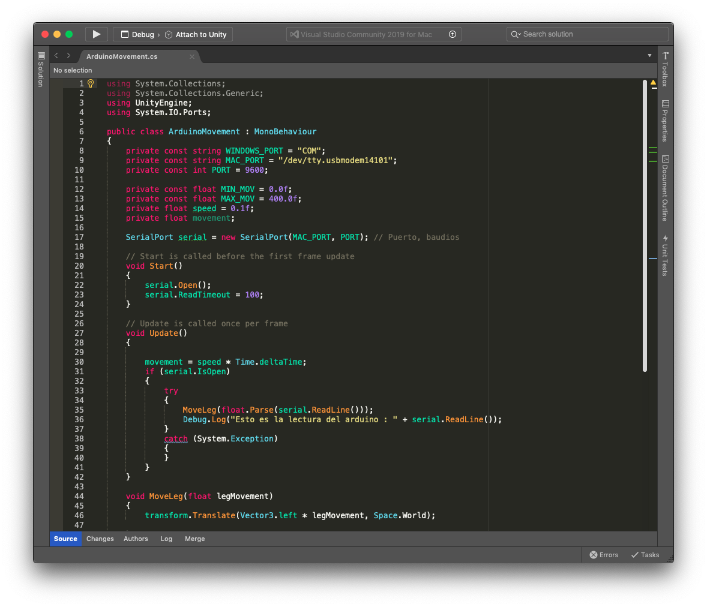

<!DOCTYPE html>
<html lang="en">
  <head>
    <meta charset="utf-8" />
    <meta name="viewport" content="width=device-width, initial-scale=1.0, maximum-scale=1.0, user-scalable=no" />

    <title>PhantomLimb</title>
    <link rel="stylesheet" href="./css/reveal.css" />
    <link rel="stylesheet" href="./css/theme/black.css" id="theme" />
    <link rel="stylesheet" href="./css/highlight/zenburn.css" />
    <link rel="stylesheet" href="./css/print/paper.css" type="text/css" media="print" />

  </head>
  <body>
    <div class="reveal">
      <div class="slides"><section  data-markdown><script type="text/template">
# Phantom Limb
<!-- .slide: data-background-video="https://cdn.flixel.com/flixel/40znjlquy1t6aux32ycs.hd.mp4" data-background-video-loop="loop" data-background-video-muted --></script></section><section  data-markdown><script type="text/template"># ¿Quiénes somos?
<div style="display: flex" class="dark-bg fragment">
    <div style="width:49%">
        <span>Alberto Mareca</span>
      
  </div>
  <div style="width:49%">
    <span>Guillermo Sesé</span>
      
  </div>
</div>
<aside class="notes"><p><strong>Estudiantes</strong> del Grado Superior y <strong>trabajadores</strong> de Deloitte.</p>
</aside></script></section><section ><section data-markdown><script type="text/template"># Nuestro proyecto
<!-- .slide: data-background-video="https://cdn.flixel.com/flixel/yh4hh7nevbdxewyuuxiy.hd.mp4" data-background-video-loop="loop" data-background-video-muted -->
<aside class="notes"><p>La idea surge de un TFG del área de <em>fisioterapia</em> para la <strong>Universidad San Jorge</strong>.</p>
</aside></script></section><section data-markdown><script type="text/template">## ¿Qué es el miembro fantasma?

<aside class="notes"><ul>
<li><strong>Sensación</strong> que tienen <strong>algunos</strong> pacientes al sufrir una amputación.</li>
<li>El dolor se manifiesta como <strong>presión, picazón, calambres, quemaduras, choque eléctrico, roces, arañazos, puñaladas</strong> y otros términos difíciles de explicar.</li>
</ul>
</aside></script></section><section data-markdown><script type="text/template">## ¿Qué terapia se emplea?
<div style="width: 100%" class="dark-bg fragment">


</div>
<aside class="notes"><ul>
<li>Técnica del <strong>espejo</strong>.</li>
<li>Engañando a las <strong>neuronas espejo</strong> del cerebro. <em>(Estas neuronas son las que nos permiten <strong>imitar emociones, gestos, etc</strong>)</em></li>
</ul>
</aside></script></section><section data-markdown><script type="text/template">## ¿Qué hemos hecho?
<aside class="notes"><ul>
<li>La idea es aplicar las <strong>nuevas tecnologías</strong> a una técnica <em>&quot;tradicional&quot;</em>. </li>
<li>Llevar a un <strong>entorno virtual</strong> el <strong>entorno tradicional</strong>.</li>
<li>Fomentar la <strong>recuperación</strong> del paciente mediante <strong>juegos</strong>.</li>
</ul>
</aside></script></section></section><section ><section data-markdown><script type="text/template"><h1 style="color: #272822">HERRAMIENTAS</h1>
<!-- .slide: data-background-video="https://cdn.flixel.com/flixel/imw4b2wdt87wnj4h863h.hd.mp4" data-background-video-loop="loop" data-background-video-muted -->
<aside class="notes"><p>Se van a indicar <strong>dos áreas</strong> de trabajo:</p>
<ul>
<li>La <strong>electrónica</strong></li>
<li>El <strong>diseño 3D</strong></li>
</ul>
</aside></script></section><section data-markdown><script type="text/template">## Electrónica
<!-- .slide: data-background-video="https://cdn.flixel.com/flixel/ts1p4x68ezcwbofpgaw2.hd.mp4" data-background-video-loop="loop" data-background-video-muted -->
<aside class="notes"><p>Se engloba en <em>electrónica</em> todo aquello relacionado a la <strong>obtención de datos</strong> y tratamiento de estos.
<strong>IMPORTANTE MENCIONAR:</strong> Las <strong>herramientas de software</strong> y elementos utilizados son <strong>todas gratuitas</strong> (o versiones gratuitas de estas)</p>
</aside></script></section><section data-markdown><script type="text/template"><h3>Sensores MyoWare</h3>

<aside class="notes"><ul>
<li>De <strong>pequeño tamaño</strong>. </li>
<li>Permiten tratar los datos en <em>crudo</em>.</li>
<li>Se les puede introducir cables de electrodos <strong>externos</strong>.</li>
</ul>
</aside></script></section><section data-markdown><script type="text/template"><h3>Arduino UNO</h3>

<aside class="notes"><p>Microcontrolador <strong>muy popular</strong> y de <strong>bajo coste</strong> con entradas/salidas analógicas y digitales.</p>
</aside></script></section><section data-markdown><script type="text/template"><h3>Lenguaje C</h3>

<aside class="notes"><p><strong>NO</strong> es <strong>C</strong> como tal, sino archivos con extensión <strong>.ino</strong> que están basados en C.</p>
</aside></script></section><section data-markdown><script type="text/template"><h1 style="color: #272822; text-shadow: -1px -1px 250px #FFF, 1px -1px 250px #FFF, -1px 1px 250px #FFF, 1px 1px 250px #FFF;">
  DISEÑO</h1>
<!-- .slide: data-background-video="https://cdn.flixel.com/flixel/epccdlfutqekbws2yszf.hd.mp4" data-background-video-loop="loop" data-background-video-muted -->
<aside class="notes"><p>Se engloba en <em>diseño</em> todo aquello relacionado con <strong>mostrar información</strong> en pantalla.</p>
</aside></script></section><section data-markdown><script type="text/template"><h3>Blender</h3>

<aside class="notes"><p>Se utilizó para añadir <strong><em>cuerpo</em> (rig)</strong> al asset 3D que ya se tenía.</p>
</aside></script></section><section data-markdown><script type="text/template"><h3>Unity</h3>

<aside class="notes"><p>Motor gráfico. Utilizada <em>versión personal</em>.</p>
</aside></script></section><section data-markdown><script type="text/template"><h3>C#</h3>

<aside class="notes"><p>Programado con Visual Studio (perteneciente a Microsoft) en su <em>versión Community</em>.</p>
</aside></script></section></section><section ><section data-markdown><script type="text/template"><h1 style="color: white; text-shadow: -1px -1px 100px #000, 1px -1px 100px #000, -1px 1px 100px #000, 1px 1px 100px #000;">
  FUNCIONAMIENTO</h1>
<aside class="notes"><p>Se explicará tanto el funcionamiento <strong>electrónico</strong> como el funcionamiento del apartado de <strong>diseño</strong>.
<!-- .slide: data-background-video="https://cdn.flixel.com/flixel/eb8823rs4soz8p6hdmpl.hd.mp4" data-background-video-loop="loop" data-background-video-muted --></p>
</aside></script></section><section data-markdown><script type="text/template">## Lectura de datos
<!-- .slide: data-background-video="https://cdn.flixel.com/flixel/7a0iejyutuuc9p8rdss3.hd.mp4" data-background-video-loop="loop" data-background-video-muted --></script></section><section data-markdown><script type="text/template">### Sensor muscular

<aside class="notes"><ul>
<li>3 Electrodos: Medio, Fin, Referencia<ul>
<li><strong>Medio</strong>: En medio del músculo con la <strong>misma dirección que éste</strong> </li>
<li><strong>Fin</strong>: Desde el medio <strong>hasta el final con la misma dirección</strong></li>
<li><strong>Referencia</strong>: En un <strong>hueso o grupo muscular ajeno</strong> a los que se están midiendo</li>
</ul>
</li>
</ul>
</aside></script></section><section data-markdown><script type="text/template">### Arduino

<aside class="notes"><ul>
<li><strong>Corre</strong> el programa <strong>continuamente</strong> desde que ésta se enciende. </li>
<li><strong>Lee los datos</strong> desde el pin al que se conecta el sensor.</li>
<li>Los <strong>envía</strong> por el <strong>puerto serie (USB)</strong> al ordenador.</li>
</ul>
</aside></script></section><section data-markdown><script type="text/template">### Conexión al PC

<aside class="notes"><p><strong>Conectar el USB</strong> del arduino al ordenador y <strong>lanzar la aplicación</strong></p>
</aside></script></section><section data-markdown><script type="text/template"><h2 style="color: white; text-shadow: -1px -1px 125px #000, 1px -1px 125px #000, -1px 1px 125px #000, 1px 1px 125px #000;">
  APLICACIÓN</h2>
<!-- .slide: data-background-video="https://cdn.flixel.com/flixel/esylem7anpznfzxbcul2.hd.mp4" data-background-video-loop="loop" data-background-video-muted --></script></section><section data-markdown><script type="text/template"><table>
  <tr>
    <td style="text-align: center; border: 0;">
      Menú inicial
      
    </td>
    <td style="text-align: center; border: 0;">
      Menú ajustes
      
    </td>
  </tr>
  <tr>
    <td style="text-align: center; border: 0;">
      Modo entreno
      
    </td>
    <td style="text-align: center; border: 0;">
      Modo libre
      
    </td>
  </tr>
</table>
<aside class="notes"><p>Remarcar que es una aplicación <strong>principalmente</strong> hecha para PC.
El <em>modo libre</em> es el <em>&quot;campo de pruebas&quot;</em>, se ha centrado el desarrollo en el <strong>apartado visual y práctico del <em>juego</em></strong>.</p>
</aside></script></section></section><section  data-markdown><script type="text/template"><h1 style="color: white; text-shadow: -1px -1px 800px #000, 1px -1px 800px #000, -1px 1px 800px #000, 1px 1px 800px #000; margin-top: -150px">Conclusiones</h1>
<!-- .slide: data-background-video="https://cdn.flixel.com/flixel/ypaoqdr7wuda8rv3dvia.hd.mp4" data-background-video-loop="loop" data-background-video-muted -->
<aside class="notes"><ul>
<li>Proyecto con ciertas dificultades:<ul>
<li>Áreas desconocidas: <strong>tema de SALUD</strong>.</li>
<li>Ha habido que aprender bastante e informarse: <strong>Electrónica y Diseño</strong>.</li>
<li>Se ha sentido falta de comunicación.</li>
</ul>
</li>
</ul>
</aside></script></section><section  data-markdown><script type="text/template"><h1 style="color: #272822; margin-top: -200px;">¿Dudas?</h1>
<!-- .slide: data-background-video="https://cdn.flixel.com/flixel/5363uhabodwwrzgnq6vx.hd.mp4" data-background-video-loop="loop" data-background-video-muted --></script></section><section  data-markdown><script type="text/template"><h2 style="color: white; text-shadow: -1px -1px 25px #000, 1px -1px 25px #000, -1px 1px 25px #000, 1px 1px 25px #000;">MUCHAS GRACIAS</h2>

<div style="position: absolute; right: 20px; top: 450px;">
  <div>Guillermo Sesé
    <span style="font-size: 0.7em; margin-left: 20px;">
      
      <a style="text-decoration: underline; color: #FFF;" href="https://github.com/ekzGuille/" target="_blank">ekzGuille</a> 
    </span>
  </div>
  <div>Alberto Mareca
    <span style="font-size: 0.7em; margin-left: 20px;">
      
      <a style="text-decoration: underline; color: #FFF;" href="https://github.com/amareca/" target="_blank">amareca</a> 
    </span>
  </div>
  <div>
    <span style="font-size: 0.7em; margin-left: 20px;">
      
      <a style="text-decoration: underline; color: #FFF;" href="https://github.com/ekzGuille/PhantomLimb-RA" target="_blank">Proyecto en Github</a>
    </span>
  </div>
</div>
<!-- .slide: data-background-video="https://cdn.flixel.com/flixel/6lg4grqag3u8qciyk7p8.hd.mp4" data-background-video-loop="loop" data-background-video-muted --></script></section></div>
    </div>

    <script src="./lib/js/head.min.js"></script>
    <script src="./js/reveal.js"></script>

    <script>
      function extend() {
        var target = {};
        for (var i = 0; i < arguments.length; i++) {
          var source = arguments[i];
          for (var key in source) {
            if (source.hasOwnProperty(key)) {
              target[key] = source[key];
            }
          }
        }
        return target;
      }

      // Optional libraries used to extend on reveal.js
      var deps = [
        { src: './lib/js/classList.js', condition: function() { return !document.body.classList; } },
        { src: './plugin/markdown/marked.js', condition: function() { return !!document.querySelector('[data-markdown]'); } },
        { src: './plugin/markdown/markdown.js', condition: function() { return !!document.querySelector('[data-markdown]'); } },
        { src: './plugin/highlight/highlight.js', async: true, callback: function() { hljs.initHighlightingOnLoad(); } },
        { src: './plugin/zoom-js/zoom.js', async: true },
        { src: './plugin/notes/notes.js', async: true },
        { src: './plugin/math/math.js', async: true }
      ];

      // default options to init reveal.js
      var defaultOptions = {
        controls: true,
        progress: true,
        history: true,
        center: true,
        transition: 'default', // none/fade/slide/convex/concave/zoom
        dependencies: deps
      };

      // options from URL query string
      var queryOptions = Reveal.getQueryHash() || {};

      var options = extend(defaultOptions, {"transition":"zoom","controls":true}, queryOptions);
    </script>


    <script>
      Reveal.initialize(options);
    </script>
  </body>
</html>
